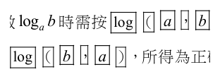
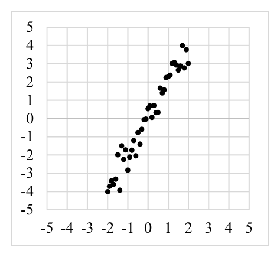
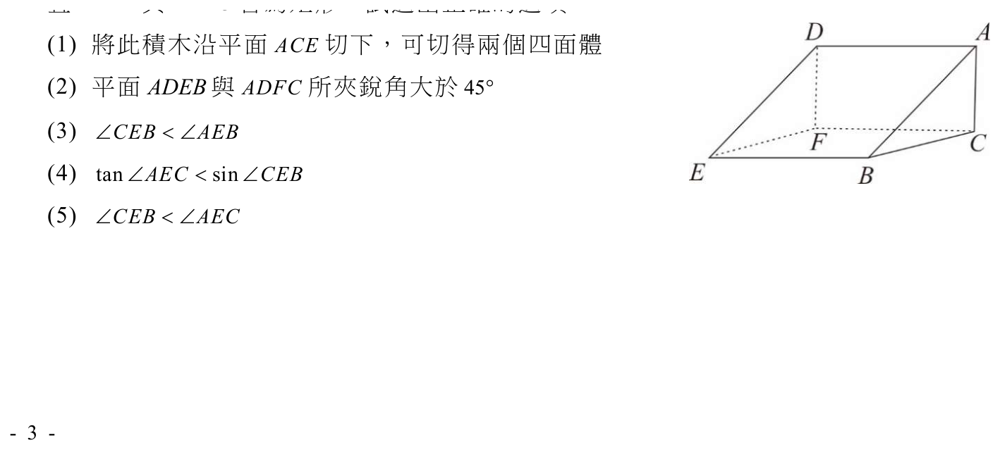
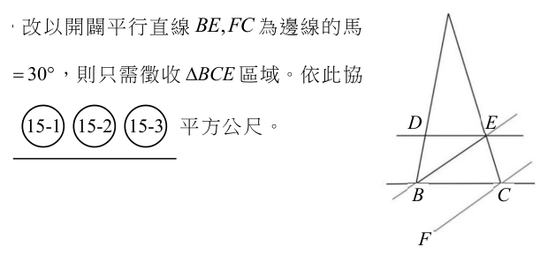

開卷有益 ／
學科能力測驗 ／ 數學A ／ 111 年111 年學科能力測驗數學A試題與答案
這一頁是民國 111 年學科能力測驗數學A的整份歷屆試題，共 20 題，題目與標準答案出自大考中心 學測歷年試題（依著作權法 §9，考試試題不受著作權保護），其中 20 題附有詳解。以下逐題列出題幹、選項與答案；要計時作答或記錄成績，請用線上練習。
線上作答這一科 →
全部 20 題
第 1 題
某冰淇淋店最少需準備 \(n\) 桶不同口味的冰淇淋，才能滿足廣告所稱「任選兩球不同口味冰淇淋的組合數超過 100 種」。試問來店顧客從 \(n\) 桶中任選兩球（可為同一口味）共有幾種方法？
（A） 101（B） 105（C） 115（D） 120（E） 225答案：（D）
詳解與考點 正解：題幹先要求不同口味的兩球組合超過 100 種，必須先用組合求最少桶數 n；再因第二問允許同一口味，改用重複組合。不同口味的組合數為 C(n,2)＝n(n−1)／2，條件為 n(n−1)／2>100，所以 n(n−1)＞200。代入 n=14，14×13=182<200，不足；代入 n=15，15×14=210>200，故最少 n=15 桶。任選兩球且可同口味的組合數為 C(15+2−1,2)＝C(16,2)＝16×15/2=120，故 D 為正解。
A：最少 n=15 時，可重複選兩球的組合數已算得 C(16,2)＝16×15/2=120，101≠120；101 不是依組合公式所得，A 錯誤。
B：105=C(15,2)＝15×14/2，只算兩球不同口味的情形；還須加上 15 種同口味情形，105+15=120，B 錯誤。
C：115=105+10，只加了 10 種同口味組合；但 15 種口味各有 1 種同口味組合，應加 15，105+15=120，C 錯誤。
E：225=15²，把兩球的選擇視為有先後順序；題目問組合，草莓、香草與香草、草莓是同一種，不能重複計數，E 錯誤。
本題考點：組合數——不同口味選兩球用 C(n,2)＝n(n−1)／2，先以不等式找最小整數 n；重複組合——n 種中可重複選 2 個用 C(n+1,2)，且組合不計選取順序。
第 2 題
某品牌計算機在計算對數 \(\log_a b\) 時需按 log（ \(a\)， \(b\) ）。某生在計算 \(\log_a b\) 時（其中 \(a>1\) 且 \(b>1\)）順序弄錯，誤按 log（ \(b\)， \(a\) ），所得為正確值的 \(\dfrac{9}{4}\) 倍。試選出 \(a, b\) 間的關係式。

（A） \(a^2 = b^3\)（B） \(a^3 = b^2\)（C） \(a^4 = b^9\)（D） \(2a = 3b\)（E） \(3a = 2b\)答案：（A）
詳解與考點 正解：本題關鍵是按鍵順序顛倒後，log_a b 與 log_b a 互為倒數，因此先設正確值再用倍數關係求指數。設 x=log_a b，則誤按所得 log_b a=1/x。依題意，1/x=(9/4)x；兩邊同乘 x，得 1=(9/4)x²；兩邊同乘 4/9，得 x²=4/9。又 a>1、b>1，所以 x=log_a b>0，取 x=2/3。故 log_a b=2/3，換為指數式得 b=a^(2/3)；兩邊三次方，b³=a²，即 a²=b³。A 符合，故 A 為正解。
B：a³=b² 等同 b=a^(3/2)，會得到 log_a b=3/2；其倒數為 2/3，誤按值是正確值的 (2/3)÷(3/2)=4/9 倍，不是 9/4 倍，B 錯誤。它看起來對，是因為 a²=b³ 與 a³=b² 的底、指數恰好互換，容易把 log_a b=2/3 寫反。
C：a⁴=b⁹ 等同 b=a^(4/9)，會得到 log_a b=4/9；其倒數為 9/4，倍數是 (9/4)÷(4/9)=81/16，不是 9/4，C 錯誤。
D：2a=3b 是 a、b 的線性關係，不能推出 log_a b=2/3；例如 a=3、b=2 時，2a=3b 成立，但 log_3 2 不等於 2/3，D 錯誤。
E：3a=2b 是 a、b 的線性關係，不能推出 log_a b=2/3；例如 a=2、b=3 時，3a=2b 成立，但 log_2 3 不等於 2/3，E 錯誤。
本題考點：對數換底的倒數關係——log_b a=1/log_a b，按鍵顛倒時先設 x 並以 1/x 建式；對數與指數互換——log_a b=p/q 即 b=a^(p/q)，兩邊取 q 次方可化為 b^q=a^p；指數判準——a、b>1 時對數為正，解 x² 時取正根。
第 3 題
在處理二維數據時，有種方法是將數據垂直投影到某一直線，並以該直線為數線，進而了解投影點所成一維數據的變異。下圖的一組二維數據，試問投影到哪一選項的直線，所得之一維投影數據的變異數會是最小？

（A） \(y = 2x\)（B） \(y = -2x\)（C） \(y = -x\)（D） \(y = \dfrac{x}{2}\)（E） \(y = -\dfrac{x}{2}\)答案：（E）
詳解與考點 正解：圖中的散點由左下往右上延伸，主軸斜率約為 2，表示資料沿斜率 2 的方向變異最大。要使垂直投影後的一維資料變異數最小，投影直線必須與主軸垂直；斜率 2 的負倒數為 -1/2。因此投影線為 y=-x/2，對應 E。
A：y=2x 的斜率為 2，與資料主軸同向；投影保留最多沿主軸的差異，變異數反而最大，A 錯誤。
B：y=-2x 的斜率為 -2。它與主軸斜率 2 的乘積為 -4，不是 -1，故不垂直，B 錯誤。
C：y=-x 的斜率為 -1。它與主軸斜率 2 的乘積為 -2，不是 -1，故不垂直，C 錯誤。
D：y=x/2 的斜率為 1/2，方向仍為正，與主軸斜率 2 的乘積為 1，不是 -1，D 錯誤。它看起來對，是因為 1/2 是 2 的倒數，但垂直斜率必須取負倒數。
本題考點：投影與變異數——資料投影到主軸方向時變異最大，投影到主軸垂直方向時變異最小；斜率垂直判準——兩條非鉛直直線垂直時斜率乘積為 -1，斜率 2 的垂線斜率是 -1/2。
第 4 題
設等差數列 \( \langle a_n \rangle \) 之首項 \( a_1 \) 與公差 \( d \) 皆為正數，且 \( \log a_1, \log a_3, \log a_6 \) 依序也成等差數列。試選出數列 \( \log a_1, \log a_3, \log a_6 \) 的公差。
（A） \( \log d \)（B） \( \log \dfrac{2}{3} \)（C） \( \log \dfrac{3}{2} \)（D） \( \log 2d \)（E） \( \log 3d \)答案：（C）
詳解與考點 正解：題幹給定 log a₁、log a₃、log a₆ 成等差數列，應先用對數將等差條件轉回原數列的等比關係，再聯立 aₙ 的等差公式。log a₁、log a₃、log a₆ 成等差，故 2log a₃=log a₁+log a₆，得到 log(a₃²)=log(a₁a₆)，所以 a₃²=a₁a₆。又 a₃=a₁+2d、a₆=a₁+5d，代入得 (a₁+2d)²=a₁(a₁+5d)。展開左邊為 a₁²+4a₁d+4d²，右邊為 a₁²+5a₁d，消去 a₁² 後得 4d²=a₁d。因 d>0，兩邊除以 d 得 a₁=4d。所求公差=log a₃-log a₁=log(a₃/a₁)=log((a₁+2d)/a₁)=log((4d+2d)/(4d))=log(6d/(4d))=log(3/2)。C：選項為 log(3/2)，故 C 為正解。
A：log d 是公差 d 的對數，並非 log a₃-log a₁；由計算可知所求為 log(3/2)，A 錯誤。
B：log(2/3)=log(a₁/a₃)，把公差所需的比值 a₃/a₁=6d/(4d)=3/2 取倒數，B 錯誤。它看起來對，是因為相鄰兩項相減時容易將前後次序寫反。
D：log(2d) 仍含 d，但所求比值為 6d/(4d)=3/2，d 已約掉，D 錯誤。
E：log(3d) 同樣未將 d 約掉，且不是 log(3/2)，E 錯誤。
本題考點：對數與等比轉換——三項對數成等差時，以 2log b=log a+log c 轉為 b²=ac；等差數列代入——先寫出指定項的 aₙ=a₁+(n-1)d，再逐步展開並利用 d>0 約分；對數公差判準——log u-log v=log(u/v)，比值中的公因數可約去。
第 5 題
已知某地區有 30% 的人口感染某傳染病。針對該傳染病的快篩試劑檢驗，有陽性或陰性兩結果。已知該試劑將染病者判為陽性的機率為 80%，將未染病者判為陰性的機率則為 60%。為降低該試劑將染病者誤判為陰性的情況，專家建議連續採檢三次。若單次採檢判為陰性者中，染病者的機率為 \(P\)；而連續採檢三次皆判為陰性者中，染病者的機率為 \(P'\)。試問 \(\dfrac{P}{P'}\) 最接近哪一選項？
（A） 7（B） 8（C） 9（D） 10（E） 11答案：（B）
詳解與考點 正解：題幹要求比較一次陰性與連續三次陰性者中真正染病的機率，關鍵是依官方答案所隱含的條件獨立假設，將三次檢驗的條件機率分別連乘，再用條件機率公式。染病機率為 0.3，未染病機率為 0.7；染病者單次判陰性的機率為 1-0.8=0.2，未染病者單次判陰性的機率為 0.6。單次陰性者中染病機率為 P=(0.3×0.2)÷(0.3×0.2+0.7×0.6)=0.06÷(0.06+0.42)=0.06÷0.48=1/8。三次皆陰性時，染病且三次陰性的權重為 0.3×0.2³=0.3×0.008=0.0024；未染病且三次陰性的權重為 0.7×0.6³=0.7×0.216=0.1512。因此 P′=0.0024÷(0.0024+0.1512)=0.0024÷0.1536=1/64。最後 P/P′=(1/8)÷(1/64)=8，故 B 為正解。
A：若比值為 7，在 P=1/8 下會得到 P′=(1/8)÷7=1/56，與算得的 1/64 不同；7 比正確值少 1。
C：若比值為 9，會得到 P′=(1/8)÷9=1/72，不是 1/64；9 比正確值多 1。
D：若比值為 10，會得到 P′=(1/8)÷10=1/80，不是 1/64；10 比正確值多 2。
E：若比值為 11，會得到 P′=(1/8)÷11=1/88，不是 1/64；11 比正確值多 3。
本題考點：貝氏條件機率——先以「先驗機率×觀測結果的條件機率」分別求染病與未染病的權重，再除以總權重；將三次陰性的機率寫成 0.2³、0.6³，必須以各次檢驗在給定染病狀態下條件獨立為前提。
第 6 題
設坐標平面上兩直線 \(L_1, L_2\) 的斜率皆為正，且 \(L_1, L_2\) 有一夾角的平分線斜率為 \(\dfrac{11}{9}\)。另一直線 \(L\) 通過點 \(\left(2, \dfrac{1}{3}\right)\) 且與 \(L_1, L_2\) 所圍的有界區域為正三角形，試問 \(L\) 的方程式為下列哪一選項？
（A） \(11x - 9y = 19\)（B） \(9x + 11y = 25\)（C） \(11x + 9y = 25\)（D） \(27x - 33y = 43\)（E） \(27x + 33y = 65\)答案：（E）
詳解與考點 正解：正三角形中，L₁、L₂ 所夾頂角的角平分線垂直於對邊 L。已知該角平分線斜率為 11/9，所以 L 的斜率為其負倒數，即 -9/11。再用點斜式代入通過點 (2,1/3)：y-1/3=-9/11(x-2)。兩邊乘 33，得 33y-11=-27x+54；移項得 27x+33y=65，對應 E。
A：11x-9y=19 改寫為 y=11/9x-19/9，斜率是 11/9，等於角平分線斜率，並未取垂直線的負倒數，A 錯誤。
B：9x+11y=25 改寫為 y=-9/11x+25/11，斜率雖為 -9/11，但代入點 (2,1/3) 得 18+11/3=65/3，不等於 25，故不通過題定點，B 錯誤。它看起來對，是因為只檢查了斜率，漏掉直線還必須通過 (2,1/3)。
C：11x+9y=25 改寫為 y=-11/9x+25/9，斜率為 -11/9，不是 11/9 的負倒數 -9/11，C 錯誤。
D：27x-33y=43 改寫為 y=9/11x-43/33，斜率為正 9/11，與所求負斜率不合，D 錯誤。
本題考點：直線垂直判準——兩條非鉛直直線垂直時，斜率乘積為 -1，故斜率 11/9 的垂線斜率為 -9/11；點斜式——已知斜率 m 與點 (x₁,y₁)，代入 y-y₁=m(x-x₁) 後逐步整理方程式；正三角形性質——頂角平分線垂直於對邊。
第 7 題 （多選）
設整數 \(n\) 滿足 \(|5n-21| \geq 7|n|\)。試選出正確的選項。
（A） \(|5n-7n| \geq 21\)（B） \(-1 \leq \dfrac{7n}{5n-21} \leq 1\)（C） \(7n \leq 5n-21\)（D） \((5n-21)^2 \geq 49n^2\)（E） 滿足題設不等式的整數 \(n\) 有無窮多個答案：（B）（D）
詳解與考點 正解：題設 |5n-21|≥7|n|，先把右邊寫成 |7n|，再使用絕對值比較的等價變形。B：若 5n-21=0，原式左邊為 0、右邊為 7|n|=7·21/5>0，不可能成立，因此可除以 5n-21。|5n-21|≥|7n| 等價於 |7n/(5n-21)|≤1，故 -1≤7n/(5n-21)≤1。D：|5n-21|與 |7n| 都非負，平方不改變大小關係，所以 |5n-21|≥|7n| 等價於 (5n-21)²≥(7n)²=49n²。
A：|5n-7n|=|-2n|=2|n|，與 |5n-21|≥7|n| 不是同一個不等式，不能由題設推出。
C：7n≤5n-21 只是處理絕對值時可能出現的一側條件，沒有涵蓋另一側，非原式的充要條件。
E：由 D 展開，(5n-21)²≥49n²；25n²-210n+441≥49n²；移項得 24n²+210n-441≤0。此二次不等式的解落在有限區間，故整數 n 的解有限，不可能有無窮多個。
本題考點：絕對值比較——|A|≥|B| 可平方為 A²≥B²；分式絕對值——在分母不為 0 時，|B/A|≤1 等價於 -1≤B/A≤1；二次不等式——開口向上的二次式小於等於 0 時，解集位於兩根之間，範圍有限。
第 8 題 （多選）
坐標平面上，\( \triangle ABC \) 三頂點的坐標分別為 \( A(0,2), B(1,0), C(4,1) \)，試選出正確的選項。
（A） \( \triangle ABC \) 的三邊中，\( \overline{AC} \) 最長（B） \( \sin A < \sin C \)（C） \( \triangle ABC \) 為銳角三角形（D） \( \sin B = \dfrac{7\sqrt{2}}{10} \)（E） \( \triangle ABC \) 的外接圓半徑比 2 小答案：（A）（D）
詳解與考點 正解：題幹給三點坐標，先用距離公式比較邊長，再以內積或正弦定理判角與外接圓。A：AB²＝(1−0)²＋(0−2)²＝1+4=5，BC²＝(4−1)²＋(1−0)²＝9+1=10，AC²＝(4−0)²＋(1−2)²＝16+1=17；所以 AC＝√17 最長，故正確。D：BA＝（−1，2），BC＝（3，1），BA·BC=(−1)×3+2×1＝−1；|BA|＝√5、|BC|＝√10，cos B＝−1／√50。sin B＝√（1−cos²B）＝√（1−1/50）＝√（49/50）＝7√2/10，故正確。
B：邊 BC＝√10 對應 ∠A，邊 AB＝√5 對應 ∠C，所以 ∠A＞∠C；兩角皆為三角形內角且此處 sin A>sin C，不是 sin A<sin C，故錯誤。
C：cos B＝−1／√50<0，所以 ∠B 為鈍角，三角形不是銳角三角形，故錯誤。它看起來對，是因為三邊長皆不顯眼，容易未用內積檢查角 B。
E：由正弦定理，2R=AC/sin B＝√17÷（7√2/10）＝10√17／（7√2）＝5√34/7，因此 R=5√34/14≈2.08>2，故錯誤。
本題考點：坐標三角形——先算邊長平方比較大小；內積判角——內積＜0 即夾角為鈍角；正弦定理——2R＝對邊／對角正弦。
第 9 題 （多選）
已知 \(P\) 為 \(\triangle ABC\) 內一點，且 \(\overrightarrow{AP}=a\,\overrightarrow{AB}+b\,\overrightarrow{AC}\)，其中 \(a,b\) 為相異實數。設 \(Q,R\) 在同一平面上，且 \(\overrightarrow{AQ}=b\,\overrightarrow{AB}+a\,\overrightarrow{AC}\)，\(\overrightarrow{AR}=a\,\overrightarrow{AB}+(b-0.05)\,\overrightarrow{AC}\)。試選出正確的選項。
（A） \(Q,R\) 也都在 \(\triangle ABC\) 內部（B） \(\left|\overrightarrow{AP}\right|=\left|\overrightarrow{AQ}\right|\)（C） \(\triangle ABP\) 面積 \(=\triangle ACQ\) 面積（D） \(\triangle BCP\) 面積 \(=\triangle BCQ\) 面積（E） \(\triangle ABP\) 面積 \(>\triangle ABR\) 面積答案：（C）（D）
詳解與考點 正解：以 AB、AC 為基底的係數；三角形面積可用相對應基底係數表示。C：△ABP 面積為 bS，因 P 的 AC 係數是 b；△ACQ 面積也為 bS，因 Q 的 AB 係數是 b，故兩者相等。D：P 的重心座標為（1−a−b，a，b），Q 的重心座標為（1−a−b，b，a）；對底邊 BC 的面積都由 A 的權重 1−a−b 決定，故 △BCP＝△BCQ。
A：P 在 △ABC 內只保證 a、b>0 且 a+b<1；交換 a、b 的 Q 仍可在內，但 R 的 AC 係數為 b−0.05，可能為負，故不保證 Q、R 都在內部。
B：AP=aAB+bAC，AQ=bAB+aAC；AB、AC 一般不等長也不必垂直，交換係數不保證向量長度相等，故錯誤。
E：△ABP 面積為 bS，△ABR 面積為（b−0.05）S；當 b<0.05 時後者涉及點在基底延長線一側，題述無法保證所稱面積大小關係，故錯誤。
本題考點：向量分解面積——以 AB、AC 為基底時，對應係數決定以一邊為底的面積比；重心座標——對 BC 的面積比例等於 A 的權重 1−a−b；位置判準——內點須各權重皆為正。
第 10 題 （多選）
給定一實係數三次多項式函數 \( f(x)=ax^3+bx^2+cx+3 \)。令 \( g(x)=f(-x)-3 \)，已知 \( y=g(x) \) 圖形的對稱中心為 \( (1,0) \) 且 \( g(-1)<0 \)。試選出正確的選項。
（A） \( g(x)=0 \) 有三相異整數根（B） \( a<0 \)（C） \( y=f(x) \) 圖形的對稱中心為 \( (-1,-3) \)（D） \( f(100)<0 \)（E） \( y=f(x) \) 的圖形在點 \( (-1,f(-1)) \) 附近會近似於一條斜率為 \( a \) 的直線答案：（A）（B）
詳解與考點 正解：本題由三次函數的對稱中心反推係數；三次函數的對稱中心就是反曲點，先令 g''(x)=0，再用中心點 (1,0) 的條件。g(x)=f(-x)-3＝-ax³＋bx²-cx，所以 g''(x)＝-6ax+2b。反曲點的 x 座標為 1，故 g''(1)＝-6a+2b=0，得 b=3a。又 g(1)＝-a+b-c=0，代入 b=3a 得 -a+3a-c=0，故 c=2a。於是 g(x)＝-ax³＋3ax²-2ax＝-a·x(x-1)(x-2)，且 f(x)＝a·x(x+1)(x+2)＋3。A：g(x)＝0 的三根為 x=0、1、2，為三個相異整數根，A 正確。B：g(-1)＝-a·(-1)(-2)(-3)＝6a。題設 g(-1)<0，故 6a<0，得 a<0，B 正確。
C：f(x)＝a·x(x+1)(x+2)＋3 的反曲點 x 座標為 -1。f(-1)＝a·(-1)·0·1+3=3，故 y=f(x) 的對稱中心是 (-1,3)，不是 (-1,-3)，C 錯誤。它看起來對，是因為 g(x)=f(-x)-3 中的 -3 容易被直接誤帶回 f 的中心 y 座標，忽略了 x 軸反射與向下平移的還原。
D：f(100)＝a·100·101·102+3=1030200a+3。雖然 a<0，但 a 可以非常接近 0，例如 a＝-0.000001 時，f(100)＝1030200×(-0.000001)＋3=1.9698>0，因此不必然小於 0，D 錯誤。
E：f'(x)＝3ax²＋6ax+2a。f'(-1)＝3a-6a+2a＝-a，所以圖形在 (-1,f(-1)) 附近近似的切線斜率為 -a，不是 a，E 錯誤。
本題考點：三次函數對稱中心——對稱中心＝反曲點，先解 g''(x)=0，再代入中心點求係數；函數變換——由 g(x)=f(-x)-3 還原 f 時，須同時處理 x 軸反射與平移；局部線性近似——某點附近近似切線，其斜率以該點的導數值判定。
第 11 題 （多選）
下圖為一個積木的示意圖，其中ABC 為一直角三角形， 且ADEB 與ADFC 皆為矩形。試選出正確的選項。 (1) 將此積木沿平面ACE 切下，可切得兩個四面體 (2) 平面ADEB 與ADFC 所夾銳角大於45° ∠ <∠ (3) CEB

本題選項為上圖中的 A／B／C／D，請對照圖片作答。
答案：（B）（C）（D）
詳解與考點 正解：這是直角三角柱，為了把二面角與空間角轉成可計算的向量，應以直角頂點 C 為原點建立座標。取 C=(0,0,0)、A=(5,0,0)、B=(0,6,0)，設側稜 AD=h，且 h>0，則 D=(5,0,h)、E=(0,6,h)、F=(0,0,h)。B：平面 ADEB 與 ADFC 的共同稜為 AD；取垂直 AD 的底面後，二面角化為 ∠BAC。tan∠BAC=BC/AC=6/5>1=tan45°，所以所夾銳角大於 45°。C：向量 EC=(0,-6,-h)、EB=(0,0,-h)、EA=(5,-6,-h)。cos∠CEB=(EC·EB)/(|EC||EB|)=h²/(√(36+h²)×h)=h/√(36+h²)；cos∠AEB=(EA·EB)/(|EA||EB|)=h²/(√(61+h²)×h)=h/√(61+h²)。因 √(36+h²)<√(61+h²)，所以 cos∠CEB>cos∠AEB，故 ∠CEB<∠AEB。D：EA·EC=36+h²，|EA×EC|=5√(36+h²)，所以 tan∠AEC=|EA×EC|/(EA·EC)=5/√(36+h²)。又 |EC×EB|=6h，所以 sin∠CEB=|EC×EB|/(|EC||EB|)=6/√(36+h²)。因 5/√(36+h²)<6/√(36+h²)，故 tan∠AEC<sin∠CEB。B、C、D 均正確。
A：平面 ACE 的方程可寫成 6z-hy=0。B 代入得 -6h<0，D、F 代入皆得 6h>0，因此切開後，含 B 的一側是四面體 ABCE，共 4 個頂點；另一側含 A、C、D、E、F，共 5 個頂點，是五頂點楔形，不是兩個四面體。
E：tan∠CEB=|EC×EB|/(EC·EB)=6h/h²=6/h，而 tan∠AEC=5/√(36+h²)。兩者皆為銳角，且比較平方可得 36(h²+36)>25h²，也就是 11h²+1296>0，所以 6/h>5/√(36+h²)，進而 ∠CEB>∠AEC；選項所稱 ∠CEB<∠AEC 錯誤。
本題考點：空間座標法——以題目給定的 AC=5、BC=6 與側稜 h 建立座標；二面角判定——沿共同稜取垂直截面，把二面角化為平面角；向量夾角判準——用內積求餘弦、外積求正弦，再以正切比較銳角大小。
第 12 題 （多選）
設 \(f(x)\)、\(g(x)\) 皆為實係數多項式，其中 \(g(x)\) 是首項係數為正的二次式。已知 \((g(x))^2\) 除以 \(f(x)\) 的餘式為 \(g(x)\)，且 \(y=f(x)\) 的圖形與 \(x\) 軸無交點。試選出不可能是 \(y=g(x)\) 圖形頂點的 \(y\) 坐標之選項。
（A） \(\dfrac{\sqrt{2}}{2}\)（B） \(1\)（C） \(\sqrt{2}\)（D） \(2\)（E） \(\pi\)答案：（A）（B）
詳解與考點 正解：題幹給「(g(x))² 除以 f(x) 的餘式為 g(x)」且 f 的圖形不與 x 軸相交，應先用多項式除法的餘式次數限制，再以二次函數頂點判斷。A：頂點 y 坐標為 √2/2，√2/2≈0.707≤1，不符合必要條件 m>1，故不可能。B：頂點 y 坐標為 1 時，g(x)=1 有重根，使 g(x)(g(x)-1) 有實根，也不可能，故 B 為正解。
C：設 g 的頂點 y 坐標 m=√2。因 √2>1，g(x)=0 與 g(x)=1 均無實根，可符合條件，C 不是不可能選項。
D：設 m=2。2>1，g(x)=0 與 g(x)=1 均無實根，可符合條件，D 錯誤。
E：設 m=π。π>1，g(x)=0 與 g(x)=1 均無實根，可符合條件，E 錯誤。
本題考點：多項式除法與二次函數——餘式 g(x) 的次數為 2，所以 f 的次數大於 2；由 (g(x))²=g(x)+f(x)q(x) 得 f(x) 整除 g(x)(g(x)-1)。又 g(x)(g(x)-1) 為 4 次、f 無實根且次數為偶，可得 f(x)=g(x)(g(x)-1) 的倍數，故 g(x)=0、g(x)=1 均不可有實根；開口向上的 g 頂點最小值 m 必須同時大於 0 與 1，判準為 m>1。
第 13 題
有一款線上遊戲推出「十連抽」的抽卡機制，「十連抽」意思為系統自動做十次的抽卡動作。若每次「十連抽」需用 1500 枚代幣，抽中金卡的機率在前九次皆為 2%，在第十次為 10%。今某生有代幣 23000 枚，且不斷使用「十連抽」，抽到不能再抽為止。則某生抽到金卡張數的期望值為 \((13\text{-}1).(13\text{-}2)\) 張。
標準答案未收錄
詳解與考點 考點：期望值與「十連抽」的線性可加性。每組十連抽抽中金卡張數的期望值為前九次各 2% 加第十次 10%，即 9×0.02 + 0.10 = 0.28 張。代幣 23000÷1500 = 15.33，最多可抽 15 組（剩 500 枚不足一抽）。由期望值線性，總期望 = 15×0.28 = 4.2 張。參考方向：先算每組期望 0.28，再乘可抽組數 15，得 (13-1)=4、(13-2)=2，即 4.2 張。此為 AI 整理之解題方向，非官方標準答案，須對照官方評分原則。
第 14 題
已知 \(a\)、\(b\) 為實數，且方程組 \(\begin{cases} x + ay + \dfrac{8}{3}z = 7 \\ 3x + 8y + az = 1 \end{cases}\) 恰有一組解，又此方程組經過一系列的高斯消去法運算後，原來的增廣矩陣可化為 \(\left[\begin{array}{ccc|c} 1 & 2 & b & 7 \\ 0 & b & 5 & -5 \\ 0 & 0 & b & 0 \end{array}\right]\)。則 \(a = \underline{\text{(14-1)}}\)，\(b = \dfrac{\text{(14-2)}}{\text{(14-3)}}\)。（化為最簡分數）
標準答案未收錄
詳解與考點 考點：高斯消去與唯一解判定。原方程組僅含參數 a。將含 a 的增廣矩陣化為最簡列梯形（RREF），與題給目標矩陣 [[1,2,b|7],[0,b,5|−5],[0,0,b|0]] 的 RREF 逐元素比對，唯一相符的是 a=2、b=1/2；代回三式 4=4、7=7、1=1 完全自洽，且 b≠0 保證 bz=0 給出唯一解。故 (14-1) a=2；(14-2)/(14-3)：b=1/2（分子 1、分母 2）。此為 AI 整理之解題方向，非官方標準答案，須對照官方評分原則。
第 15 題
如圖，王家有塊三角形土地 ，其中 DE BC 為邊線的馬路，其路寬為h 公尺，這讓王家土地 , 開闢以直線 只剩原有面積的9 16 。經協商，改以開闢平行直線 ∠ = °，則只需徵收 EBC 30 路，且路寬不變，其中 有○ 15-1 ○

本題選項為上圖中的 A／B／C／D，請對照圖片作答。
標準答案未收錄
詳解與考點 考點：相似三角形面積比。DE∥BC 使剩餘 △ADE 為原面積的 9/16，故 (AD/AB)²=9/16、AD/AB=3/4，且 DE 到 BC 的距離（路寬 h）為 △ABC 高的 1/4。第二方案中 E 在 AC 上，∠EBC=30°，徵收 △BCE，於是剩餘 △ABE = △ABC − △BCE。參考方向：先由面積比定出 AD/AB=3/4 與高、求 △ABC 全面積，再以 BC=16、∠EBC=30° 及 E 到 BC 的距離（與 h 一致）算 △BCE，相減得 △ABE。此為 AI 整理之解題方向，非官方標準答案，須對照官方評分原則。
第 16 題
坐標空間中，平面 \(x-y+2z=3\) 上有兩相異直線 \(L:\dfrac{x}{2}-1=y+1=-2z\) 與 \(L'\)。已知 \(L\) 也在另一平面 \(E\) 上，且 \(L'\) 在 \(E\) 的投影與 \(L\) 重合。則 \(E\) 的方程式為 \(x+\boxed{\text{(16-1)}}\,\boxed{\text{(16-2)}}\;y+\boxed{\text{(16-3)}}\,\boxed{\text{(16-4)}}\;z=\boxed{\text{(16-5)}}\)。
標準答案未收錄
詳解與考點 【題目整理】坐標空間中，平面 H：x − y + 2z = 3 上有兩相異直線 L 與 L′，其中 L：(x/2)−1 = y+1 = −2z。已知 L 也在另一平面 E 上，且 L′ 在 E 上的（正）投影與 L 重合，求 E 的方程式。
【步驟一：解析直線 L】
令 (x/2)−1 = y+1 = −2z = t，則
x = 2t + 2， y = t − 1， z = −t/2。
取 t 的係數並乘以 2 得方向向量 d =（4, 2, −1）；取 t = 0 得 L 上一點 P =（2, −1, 0）。
驗證 L 確在 H 上：P 代入 H 得 2 −(−1) + 0 = 3 ✓；方向與法向 n_H =（1, −1, 2）內積 = 4 − 2 − 2 = 0 ✓。
【步驟二：把投影條件轉成法向條件】
設 E 的法向為 n_E。對 L′ 上任一點 Q，其在 E 上的正投影點 Q′ 落在 L 上。正投影代表 Q 沿著 E 的法向方向移動到 E，故 向量 QQ′ 平行於 n_E。
又因 Q 在 L′ ⊂ H 上、Q′ 在 L ⊂ H 上，故 QQ′ 連接平面 H 上的兩點，整段都落在 H 內，因此 QQ′ 垂直於 H 的法向 n_H。
由 QQ′ ∥ n_E 與 QQ′ ⊥ n_H 得：n_E ⊥ n_H。
另外，因 L 在 E 上，L 的方向 d 也必垂直於 n_E，即 n_E ⊥ d。
所以 n_E 同時垂直 d 與 n_H，可取
n_E = d × n_H =（4, 2, −1）×（1, −1, 2）=（2·2−(−1)(−1), (−1)·1−4·2, 4·(−1)−2·1）=（3, −9, −6），
化簡（同除以 3）得 n_E =（1, −3, −2）。
【步驟三：寫出 E 的方程式】
E 通過 P =（2, −1, 0），法向（1, −3, −2）：
1·(x−2) − 3·(y+1) − 2·(z−0) = 0 ⟹ x − 3y − 2z = 2 − 3 = 5。
故 E：x − 3y − 2z = 5。
（此 E 與原平面 H：x − y + 2z = 3 確實不同，符合「另一平面」的要求。）
【驗證投影條件成立】
n_E·n_H =（1）(1)+(−3)(−1)+(−2)(2)= 1 + 3 − 4 = 0，故 n_E ⊥ n_H，投影方向落在 H 內。因此 H 上任一點沿 n_E 方向移動仍在 H 內，最終落在 E∩H 上；而 E∩H 正是同時滿足 x−y+2z=3 與 x−3y−2z=5 的直線，計算可知其方向為 d=（4,2,−1）、過 P=（2,−1,0），即 L 本身。故 H 上任何異於 L 的直線 L′ 投影到 E 後都會落在 L 上，與題意完全相符。
【最終結果】
E：x − 3y − 2z = 5。
填空：x +（−3）y +（−2）z = 5，即 (16-1)(16-2)=−3、(16-3)(16-4)=−2、(16-5)=5。
第 17 題
坐標空間中一平行六面體，某一底面的其中三頂點為 \((-1,2,1)\)、\((-4,1,3)\)、\((2,0,-3)\)，另一面之一頂點在 \(xy\) 平面上且與原點距離為 \(1\)。滿足前述條件之平行六面體中，最大體積為 ㊀㊁。
標準答案未收錄
詳解與考點 【題目】坐標空間中一平行六面體，某一底面的其中三頂點為 A=(-1,2,1)、B=(-4,1,3)、C=(2,0,-3)，另一面（與此底面相對的面）之一頂點 P 在 xy 平面上且與原點距離為 1。求此平行六面體可能的最大體積。
【關鍵觀念】平行六面體的體積 =（底面積）×（兩底面之間的垂直高度）。由於兩底面平行，高度即為相對面上任一點 P 到此底面所在平面的垂直距離。
【步驟一：底面所在平面的法向量與底面積】
以 A 為基準取兩邊向量：
AB = B - A = (-3, -1, 2)，AC = C - A = (3, -2, -4)。
法向量 n = AB × AC：
n_x = (-1)(-4) - (2)(-2) = 4 + 4 = 8，
n_y = (2)(3) - (-3)(-4) = 6 - 12 = -6，
n_z = (-3)(-2) - (-1)(3) = 6 + 3 = 9，
故 n = (8, -6, 9)，且 |n| = √(8²+6²+9²) = √181。
底面是以 A、B、C 為頂點的平行四邊形，其面積 = |AB × AC| = |n| = √181（與「以哪一點為夾角頂點」無關，因為任兩個差向量的外積長度都等於三角形面積的兩倍，皆為 √181）。
【步驟二：把體積寫成 P 的線性函數】
設 P=(x, y, 0)（在 xy 平面上），且 x²+y²=1（與原點距離 1）。
P 到底面（過 A、法向量 n）的距離 = |n·(P - A)| / |n|。
體積 V = 底面積 × 高 = |n| · |n·(P - A)| / |n| = |n·(P - A)|。
計算 n·A = 8·(-1) + (-6)·2 + 9·1 = -8 - 12 + 9 = -11。
因 P 的 z 座標為 0，n·P = 8x - 6y，故
V = |n·P - n·A| = |8x - 6y - (-11)| = |8x - 6y + 11|。
【步驟三：在單位圓上求極值】
由柯西不等式（或視為向量內積），對 x²+y²=1:
8x - 6y 的範圍為 [-√(8²+6²), √(8²+6²)] = [-10, 10]。
故 8x - 6y + 11 介於 [1, 21]，皆為正，
V = 8x - 6y + 11 ∈ [1, 21]。
最大值 V = 21，於 8x - 6y = 10、即 (x, y) = (8, -6)/10 = (4/5, -3/5) 時取得，
此時 P = (4/5, -3/5, 0)，確實滿足 |P| = 1。
（最小體積為 1，但題目問最大值。）
【結論】滿足前述條件之平行六面體中，最大體積為 21。對應官方填充答案：17-1 = 2、17-2 = 1。
【為何不需擔心「三頂點對應哪個夾角」與「平行四邊形第四頂點」】無論視 A、B 或 C 為平行四邊形的夾角頂點，底面積恆為 √181，且底面所在平面唯一（皆過 A、B、C 三點，法向量同為 (8,-6,9) 方向）；而體積公式 V = |n·(P - A)| 只依賴底面平面與點 P，與第四頂點選法無關，故最大體積唯一為 21。
第 18 題
試問點 \(B\) 的坐標為下列哪一選項？（單選題，3 分）
（A） \((0,2)\)（B） \((1,\sqrt{3})\)（C） \((\sqrt{2},\sqrt{2})\)（D） \((\sqrt{3},1)\)（E） \((2,0)\)答案：（D）
詳解與考點 正解：題幹問點 B 的坐標，關鍵是先以到原點距離與夾角定位；由前文圖形的設定，B 到原點距離為 2、與 x 軸夾角為 30°，故 x=2cos30°=2·√3/2=√3，y=2sin30°=2·1/2=1，B 為 (√3,1)，故 D 為正解。
A：點 (0,2) 的 x=0，落在 y 軸上，與 30° 的位置條件不符，A 錯誤。
B：點 (1,√3) 到原點距離為 √(1²+(√3)²)=√4=2，但 tanθ=√3/1=√3，θ=60°，不是 30°，B 錯誤。它看起來對，是因為它同樣到原點距離為 2，卻把 30° 的兩個坐標分量顛倒了。
C：點 (√2,√2) 到原點距離為 √((√2)²+(√2)²)=√4=2，且 tanθ=√2/√2=1，θ=45°，不符 30°，C 錯誤。
E：點 (2,0) 落在 x 軸上，夾角為 0°，不符 30° 的位置條件，E 錯誤。
本題考點：坐標與三角比定位——已知原點距離 r 與正 x 軸夾角 θ 時，以 x=r cosθ、y=r sinθ 求坐標；位置檢核——再以 x²+y²=r² 與 y/x=tanθ 驗證距離及角度。
第 19 題
令 \(O\) 為原點，掃描棒停止時黑、白兩端所在位置分別為 \(A'\), \(B'\)。試在答題卷上作圖區中以斜線標示掃描棒掃過的區域 \(R\)；並於求解區內求 \(\cos\angle OA'B'\) 及點 \(A'\) 的極坐標。（非選擇題，6 分）
標準答案未收錄
詳解與考點 【題組共用題幹（18-20 題）】坐標平面上有一環狀區域，由圓 x²+y²=3（半徑 √3）的外部與圓 x²+y²=4（半徑 2）的內部交集而成。某人用一支長度為 1 的筆直掃描棒掃描此環狀區域在 x 軸上方的部分：黑端在內半圓 C₁：x²+y²=3（y≥0）上移動，白端在外半圓 C₂：x²+y²=4（y≥0）上移動。開始時黑端在 A(√3, 0)，白端在 C₂ 上的點 B；接著黑、白兩端各沿 C₁、C₂ 逆時針移動，直到白端碰到 C₂ 的點 B'(−2, 0) 便停止。（第 18 題已得 B 的坐標為 (√3, 1)。）
【關鍵：建立兩端的角度關係】
設黑端在 C₁ 上的極角為 α、白端在 C₂ 上的極角為 β，則
黑端 =（√3cosα, √3sinα），白端 =（2cosβ, 2sinβ）。
掃描棒長固定為 1，故兩端距離平方恆為 1：
|白端 − 黑端|² = (√3)² + 2² − 2·√3·2·cos(β−α) = 7 − 4√3·cos(β−α) = 1，
解得 cos(β−α) = 6 ÷ (4√3) = √3/2，故 β − α = 30°（始終為定值）。
驗證初始狀態：黑端 A(√3, 0) 對應 α = 0°；白端 B(√3, 1) 滿足 2cosβ = √3、2sinβ = 1，即 β = 30°，恰有 β − α = 30°，相符。
【求停止位置 A'】
停止時白端到達 B'(−2, 0)，即 β = 180°，於是 α = β − 30° = 150°。
黑端停止位置 A' =（√3cos150°, √3sin150°）=（√3·(−√3/2), √3·(1/2)）=（−3/2, √3/2）。
【求 cos∠OA'B'】
O 為原點。計算三邊：
|OA'| = √[(−3/2)² + (√3/2)²] = √(9/4 + 3/4) = √3，
|A'B'| = √[(−3/2−(−2))² + (√3/2−0)²] = √[(1/2)² + (√3/2)²] = √(1/4 + 3/4) = 1（與掃描棒長 1 相符），
|OB'| = 2。
觀察 |OA'|² + |A'B'|² = 3 + 1 = 4 = |OB'|²，故 △OA'B' 在頂點 A' 為直角。
由餘弦定理：cos∠OA'B' = (|OA'|² + |A'B'|² − |OB'|²) ÷ (2·|OA'|·|A'B'|) = (3 + 1 − 4) ÷ (2·√3·1) = 0。
∴ cos∠OA'B' = 0（∠OA'B' = 90°）。
【求 A' 的極坐標】
A' =(−3/2, √3/2)。
極徑 r = |OA'| = √3；極角 θ：A' 在第二象限，tanθ = (√3/2)/(−3/2) = −1/√3，得 θ = 150°（= 5π/6）。
∴ A' 的極坐標為 (√3, 150°)，即 (√3, 5π/6)。
【掃過區域 R 的作圖說明】
因 β − α 恆為 30°，黑端沿 C₁ 由極角 0° 掃到 150°，白端沿 C₂ 由極角 30° 掃到 180°。注意每一支掃描棒都滿足「內端半徑² + 棒長² = 外端半徑²」(3+1=4)，即掃描棒在黑端處與內圓 C₁ 相切、且整支棒都落在環狀區域內。因此 R 是一個「彎月／環帶狀」區域，邊界由四段組成：
(1) 內側：C₁ 上黑端所經的弧（極角 0° 到 150°）；
(2) 外側：C₂ 上白端所經的弧（極角 30° 到 180°）；
(3) 一端：起始掃描棒 AB（A(√3,0) 到 B(√3,1)）；
(4) 另一端：終止掃描棒 A'B'（A'(−3/2, √3/2) 到 B'(−2,0)）。
於答題卷作圖區內，以斜線標示上述四段所圍的環帶狀區域即為 R。
第 20 題
（承 19 題）令 \(\Omega\) 表示掃描棒在第一象限所掃過的區域，試分別求 \(\Omega\) 與 \(R\) 的面積。（非選擇題，6 分）
標準答案未收錄
詳解與考點 【題組共用題幹（18-20 題）】坐標平面上有一環狀區域，由圓 x²+y²=3 的外部與圓 x²+y²=4 的內部交集而成。掃描棒長度為 1，黑端在內半圓 C₁: x²+y²=3（y≥0，半徑 √3）上移動，白端在外半圓 C₂: x²+y²=4（y≥0，半徑 2）上移動。開始時黑端在 A(√3, 0)、白端在 C₂ 的點 B；接著黑、白兩端各沿 C₁、C₂ 逆時針移動，直到白端碰到 C₂ 的點 B′(−2, 0) 停止。第 20 題為「承 19 題」，須先用題幹建立掃描棒的運動參數式。
【掃描棒的運動參數化】設黑端 P(θ)=√3(cos θ, sin θ)、白端 Q(φ)=2(cos φ, sin φ)。由棒長恆為 1：
|PQ|² = 3 + 4 − 2·√3·2·cos(φ−θ) = 7 − 4√3 cos(φ−θ) = 1
⇒ cos(φ−θ) = √3/2 ⇒ φ−θ = 30°（白端領先黑端 30°）。
起始：θ=0 給黑端 A(√3, 0)，則 φ=30° 給白端 B=(2cos30°, 2sin30°)=(√3, 1)（此即第 18 題答案 (4)）。
終止：白端碰到 B′(−2, 0)，即 φ=180°，故黑端 θ=150°，黑端位於 A′=√3(cos150°, sin150°)=(−3/2, √3/2)。
因此運動範圍：黑端 θ∈[0°, 150°]、白端 φ∈[30°, 180°]，始終 φ=θ+30°。
【掃過區域 R 的邊界】由於環狀厚度 2−√3≈0.27，每個 θ 對應的棒恰好連接內、外半圓，掃過的 R 為一帶狀區域，逆時針邊界為：
(1) 起始棒：A(√3, 0) → B(√3, 1)（直線段）
(2) 外弧：白端沿 C₂ 由 φ=30° 到 180°（半徑 2）
(3) 終止棒：B′(−2, 0) → A′(−3/2, √3/2)（直線段）
(4) 內弧：黑端沿 C₁ 由 θ=150° 回到 0°（半徑 √3，順向回走）
【用格林定理 Area=½∮(x dy − y dx) 計算 R】
‧外弧（r=2，φ:30°→180°）：½·r²·Δφ = ½·4·(5π/6) = 5π/3
‧內弧（r=√3，θ:150°→0°）：½·3·(−5π/6) = −5π/4
‧兩直線段：½(x₁y₂−x₂y₁)。起始棒 ½(√3·1−√3·0)=√3/2；終止棒 ½((−2)(√3/2)−(−3/2)(0))=−√3/2，兩者相消為 0。
故 R 面積 = 5π/3 − 5π/4 = (20π−15π)/12 = 5π/12。
（驗算：環狀半圓總面積 ½π(4−3)=π/2，未掃到部分 π/2−5π/12=π/12，恰為起始端外圓 φ∈[0°,30°] 與終止端內圓 θ∈[150°,180°] 兩個 30° 缺口，比例 5/6，合理。）
【計算第一象限 Ω 的面積】Ω = R∩{x≥0, y≥0}。R 的外弧、內弧分別在 φ=90°（點 (0,2)）、θ=90°（點 (0,√3)）穿過正 y 軸。Ω 逆時針邊界為：
(1) 起始棒 A(√3,0)→B(√3,1)
(2) 外弧 φ:30°→90°（B 到 (0,2)）
(3) y 軸段 (0,2)→(0,√3)（x=0，貢獻 0）
(4) 內弧 θ:90°→0°（(0,√3) 回到 A）
逐段格林定理：
‧外弧：½·4·(π/3) = 2π/3
‧內弧：½·3·(0−π/2) = −3π/4
‧y 軸段：0
‧起始棒：√3/2
Ω 面積 = 2π/3 − 3π/4 + √3/2 = (8π−9π)/12 + √3/2 = √3/2 − π/12。
【最終結果】
Ω 的面積 = (√3)/2 − π/12 ≈ 0.604
R 的面積 = 5π/12 ≈ 1.309
其他年度
回到學科能力測驗數學A的年度總覽 ，
或到學科能力測驗題庫首頁 看其他科目。
題目與標準答案出自大考中心 學測歷年試題（依著作權法 §9，考試試題不受著作權保護）。依中華民國《著作權法》第 9 條第 1 項第 5 款，
依法令舉行之各類考試試題不得為著作權之標的，得自由利用。詳解為 AI 整理的學習輔助，
並非官方標準答案 ；中華民國會修訂，引用前請對照現行版本查證。